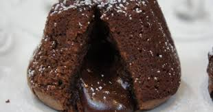

Volcan de Chocolate
Coulant, fondant o volcán es un conocido postre de chocolate patentado por el chef Francés Michel Bras en 1981 en su restaurante de Laguiole, en la meseta de l'Aubrac, al suroeste de Francia.
$ 1500 .- por Caja (5 Unidades)
Coulant, fondant o volcán es un conocido postre de chocolate patentado por el chef Francés Michel Bras en 1981 en su restaurante de Laguiole, en la meseta de l'Aubrac, al suroeste de Francia.
$ 1500 .- por Caja (5 Unidades)